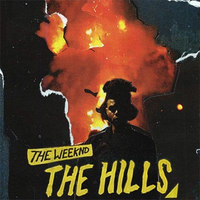

Official website Press here
Tesfaye’s mother and grandmother immigrated in the 1980s to Canada from Ethiopia, and his first language was Amharic. When he was in grade 11, he quit school and left home, devoting himself to unbridled partying. Tesfaye eventually landed a job at American Apparel and at the same time began writing songs about drug use, casual sex, and alienation. He crossed paths with musician and producer Jeremy Rose, and they started working together. Their collaboration yielded three atmospheric songs—“The Morning,” “Loft Music,” and “What You Need”—with lyrics that were partly sung and partly rapped. The songs, credited to The Weeknd, were uploaded as audio files to the video-sharing Web site YouTube in late 2010; their popularity grew exponentially after they were posted to the blog of Canadian rapper Drake.
In 2014, he achieved further success with the hit "Earned it", which was released as part of the soundtrack for the film - Fifty Shades of Grey.
A snippet of a soundtrack
Eventually in 2015, the artist incliuted this song as one of the main tracks in his new album - Beauty Behind the Madness.This album also featuret well-known singles such as "The Hills" and "Can't feel my face".
In 2025, The Weeknd will be performing in Australia on the following dates: